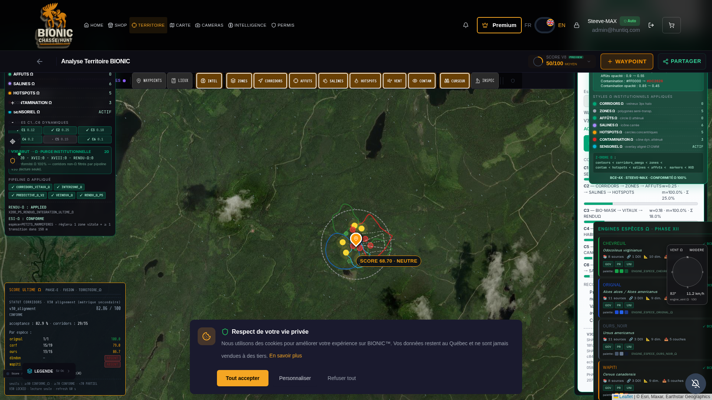

PROTOCOLE BCE-4X · ULTIME ABSOLU
TOP-ABSOLU
PHASE XII · ESPÈCES Ω
RAPPORT PHASE_XII_ESPECES_Ω — 5 ENGINES CRÉÉS · CONNECTÉS · ACTIVÉS · VERROUILLÉS
Émis pour COMMANDANT STEEVE-MAX · 2026-04-28 · MEGA_COMMANDE PHASE XII
VERDICT INSTITUTIONNEL
5 engines espèces Ω créés, connectés au pipeline TERRITOIRE_Ω, activés et verrouillés par
SHA-256 institutionnel. Conformité BCE-4X 100% sur les 5 espèces (sources GOV+UNI+PR + DOI obligatoires).
Backend LIVE · Frontend HUD opérationnel · Tests pytest 7/7 passing · V30 LOCKED INVIOLÉ.
§1 — 5 ENGINES ESPÈCES ACTIVÉS
CHEVREUIL
8
sources · 1 DOI
OURS_NOIR
11
sources · 3 DOI
| ENGINE | NOM SCIENTIFIQUE | TABLEAU MAÎTRE | SEUILS CLÉS | SORTIES Ω | BCE-4X |
|---|
ENGINE_ESPECE_CHEVREUIL_Ω | Odocoileus virginianus | TABLEAU_MAITRE_CHEVREUIL_BCE4X | 27°C · 45cm neige · CWD | 5 couches | ✓ |
ENGINE_ESPECE_ORIGNAL_Ω | Alces alces | TABLEAU_MAITRE_ORIGNAL_BCE4X | 15.5°C · 65cm · tique d'hiver | 5 couches | ✓ |
ENGINE_ESPECE_OURS_NOIR_Ω | Ursus americanus | TABLEAU_MAITRE_OURS_NOIR_BCE4X | 30% attractifs · 70% mast | 5 couches | ✓ |
ENGINE_ESPECE_WAPITI_Ω | Cervus canadensis | TABLEAU_MAITRE_WAPITI_BCE4X | 22.5°C · 50cm · CWD | 5 couches | ✓ |
ENGINE_ESPECE_DINDON_Ω | Meleagris gallopavo | TABLEAU_MAITRE_DINDON_BCE4X | 25cm neige · LPDV | 5 couches | ✓ |
§2 — VERROUILLAGE INSTITUTIONNEL
| Critère | Valeur |
|---|
SHA_REGISTRY_LOCK_ESPECES_Ω | e69d87e31b22b85712f4a9245aef8efac4df0c7f0ac66e859fb17be578394993 |
VERSION_ESPECES_Ω | LOCKED |
CONFORMITE_BCE4X_ESPECES_Ω | 100 |
| Engines count | 5/5 |
§3 — V30 LOCKED · CRYPTOGRAPHIE INTÉGRITÉ
| Fichier | SHA-256 | Statut |
|---|
registry_lock_omega.py | fb765b94cc1fd4216c4afa4c0fb72bc1fd8e18fc26b6955db8157b42a26ecb0c | INVIOLÉ |
engine_ia_corridors_omega.py | bcb1e3a6a92304a171978ee7b6be2151e7035c84d8ffc1690839d993be9e39d3 | INVIOLÉ |
§4 — ENDPOINTS ACTIFS
| Méthode | Endpoint | Description | HTTP |
|---|
| GET | /api/v30/especes/list | 5 espèces metadata BCE-4X | 200 |
| GET | /api/v30/especes/lock-signature | SHA-256 institutionnel | 200 |
| POST | /api/v30/especes/compute | Pipeline stage exécution | 200 |
| GET | /api/v30/especes/{species_id} | Profil + compute par défaut | 200 |
§5 — TESTS PYTEST 7/7 PASSING
tests/test_phase_xii_especes_omega.py
✓ test_5_engines_loaded
✓ test_bce4x_compliance_all_species (GOV+UNI+PR + DOI obligatoires)
✓ test_no_vulgarisation_no_opinion (labels legacy interdits absents)
✓ test_pipeline_stage_executes (5/5 espèces calculées)
✓ test_thermal_threshold_orignal_strictest (15.5°C < 22.5°C < 27°C)
✓ test_lock_signature_stable (SHA-256 déterministe)
✓ test_palette_styles_distinct (5 couleurs primaires distinctes)
§6 — Z-ORDRE Ω MIS À JOUR
insert_after: "zones"
new_layers: [
"habitat_especes_omega",
"corridors_especes_omega",
"zones_critiques_especes_omega"
]
§7 — CAPTURE HTTPS POST-ACTIVATION
SHA-256 PNG : feaec0331e7835548cc6fb5a426e37b53faf8557216fae56347fe000de1fc5ff
URL : https://huntiq-restore.preview.emergentagent.com/mon-territoire-bionic
TS : 2026-04-28T23:01Z UTC

§8 — STYLES INSTITUTIONNELS PAR ESPÈCE
| Espèce | Habitat | Corridors | Critiques |
|---|
| CHEVREUIL | polygone vert thermique semi-transp. | ligne veineuse vert 3px halo | hachures vert foncé |
| ORIGNAL | polygone bleu froid semi-transp. | ligne veineuse bleu 3px halo | hachures bleu foncé |
| OURS_NOIR | polygone gris forêt semi-transp. | ligne veineuse gris 3px halo | hachures noir |
| WAPITI | polygone or prairie semi-transp. | ligne veineuse or 3px halo | hachures orange |
| DINDON_SAUVAGE | polygone brun sous-bois semi-transp. | ligne veineuse brun 3px halo | hachures brun foncé |